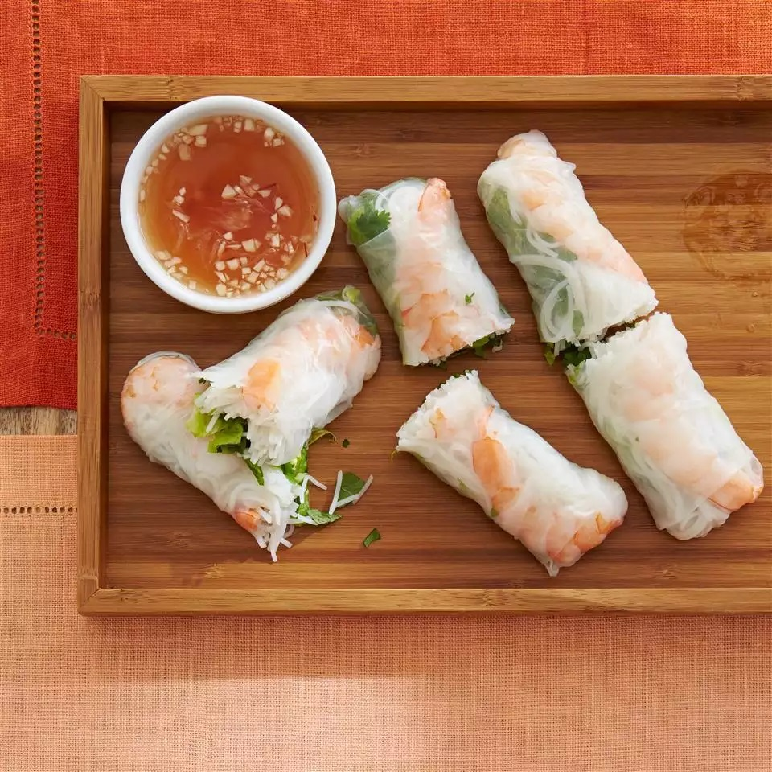

Vietnamese Rice Paper Rolls
Description
These Vietnamese rice paper rolls are a refreshing change from the usual fried variety and have become a family favorite. They are a great summertime appetizer and delicious dipped in one or both of the sauces.
Ingredients
- 2 ounces rice vermicelli
- 8 rice wrappers (8.5 inch diameter)
- 8 large cooked shrimp - peeled, deveined and cut in half
- 2 leaves lettuce, chopped
- 3 tablespoons chopped fresh mint leaves
- 3 tablespoons chopped fresh cilantro
- 1 ⅓ tablespoons chopped fresh Thai basil
Sauces
- ¼ cup water
- 2 tablespoons fresh lime juice
- 2 tablespoons white sugar
- 4 teaspoons fish sauce
- 1 clove garlic, minced
- ½ teaspoon garlic chili sauce
- 3 tablespoons hoisin sauce
- 1 teaspoon finely chopped peanuts
Steps
- Fill a large pot with lightly salted water and bring to a rolling boil; stir in vermicelli pasta and return to a boil. Cook pasta uncovered, stirring occasionally, until the pasta is tender yet firm to the bite, 3 to 5 minutes.
- Fill a large bowl with warm water. Dip one wrapper into the hot water for 1 second to soften. Lay wrapper flat; place 2 shrimp halves in a row across the center, add some vermicelli, lettuce, mint, cilantro, and basil, leaving about 2 inches uncovered on each side. Fold uncovered sides inward, then tightly roll the wrapper, beginning at the end with lettuce. Repeat with remaining ingredients.
- For the sauces: Mix water, lime juice, sugar, fish sauce, garlic, and chili sauce in a small bowl until well combined. Mix hoisin sauce and peanuts in a separate small bowl.
- Serve rolled spring rolls with fish sauce and hoisin sauce mixtures.